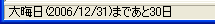
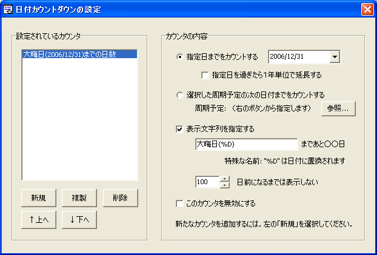

日付のカウントダウンを設定すると， 特定の日付あるいは周期予定まであと何日かを ステータスバーに表示することができます．
メニュー [カレンダー]-[日付カウントダウンの設定 ...] からダイアログを開きます．
設定ダイアログは，２つの部分から構成されます．
[設定されているカウンタ] に，作成済みのカウンタが表示されます． 新たなカウンタを追加するには[新規]ボタンを押してください．
[複製]は選択しているカウンタの複製，[削除]はカウンタの削除を行います．
[↑上へ]と[↓下へ]ボタンは，カウンタの順序を入れ替えます． リストの上からの順番が，メインウィンドウのステータスバーの左側からの順番に一致します．
カウンタをリストから選択すると，その内容が右側に表示されます． 右側でカウンタの情報を修正すると，その結果は反映されます （編集のキャンセル機能はありません）．
| 指定日までをカウントする | 特定の日付までの日数をカウントダウンしたい場合に選択します． |
| 指定日を過ぎたら１年単位で延長する | 指定日を過ぎ去った日（カウントが０になった次の日）からは， 指定日の１年後，２年後，... にあたる日までのカウントダウンを行います． |
| 周期予定の次の日付までをカウントする | 周期予定の次の該当日までの日数をカウントダウンします．[参照]ボタンから周期予定を選んでください． 周期予定では，名前に "%d" を使うことで特定の日からの日数を表示する機能がありますが， カウントダウンとして参照しているときは無効で，そのまま "%d" が表示されます． |
| 表示文字列を指定する |
標準では，カウンタは「2000/01/01まであと何日」というように指定日あるいは周期予定の名前が表示されます． これを変更したい場合にチェックを付け，名前を指定してください． この名前における "%D" は特別な意味を持ち， 指定している日あるいは周期予定の該当日に置換されます （周期予定の該当日が遠い場合，リストには便宜上 "????/??/??" という形で表示されます）． |
| Ｘ日前になるまでは表示しない | あと何日になったらそのカウンタを表示するかを指定します．最長で３６６日です． |
| このカウンタを無効にする | カウンタを一時的に表示したくない場合にチェックしてください． |